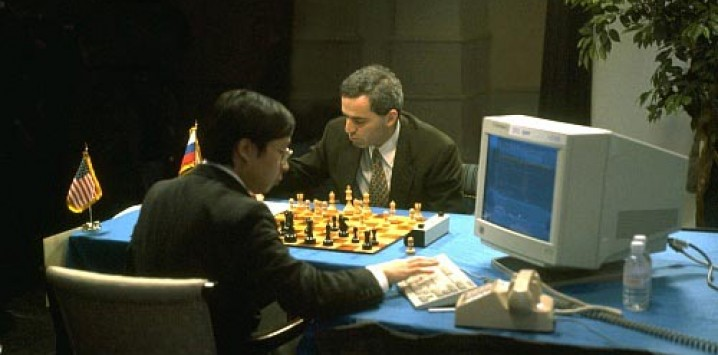

Satranç
M.Ö. 2000'li yıllarda satrancın oynandığına dair bulgular Mısır'da piramitlerdeki kabartmalarda vardır. Satranç, MS 6. yüzyılda Hindistan'da ortaya çıktı.
MS 10. yüzyıla gelindiğinde tüm Asya'ya, Ortadoğu ve Avrupa'ya yayılmıştı. En geç 15. yüzyıldan itibaren Avrupa'da soylular arasında çok popüler bir oyun haline geldiğinden "kraliyet oyunu" olarak anılmaya başlandı. Kurallar ve dizilişler zaman içerisinde çeşitli değişiklikler gösterdi ve 19. yüzyılda bugünkü standart halini aldı. 20. yüzyıl Avrupası'nda toplumun entelektüel üst tabakaları arasında yayıldı ve dünyanın en popüler oyunlarından biri haline geldi.
Oyunun icadı konusunda birkaç efsane mevcuttur. Bunlardan biri Sissa ibn Dahi, buğday tanesi efsanesidir. 6. yüzyıldan beri satranç Îran'da bilinmektedir. Buradan 7. yüzyılda İslam'ın yayılışıyla birlikte Orta Doğu'da ve Kuzey Afrika'da yayılır. Endülüs Emevîleri, İtalya, Bizans İmparatorluğu ve Rusya yoluyla oyun, 9. ila 11. yüzyıllar arasında Avrupa'nın diğer yerlerine yayılır. Burada bir yandan şövalyelerin yedi yiğit erdeminden sayılırken diğer yandan kilise tarafından uygun bulunmuyordu. 15. yüzyılda oyun kuralları belirleyici şekilde değişir. Bu yüzyıldan sonra bugün oynanana benzeyen modern satrançtan bahsedilebilmektedir. İspanya (16. yüzyıl), İtalya (16./17. yüzyıl), Fransa (18./19. yüzyıl), İngiltere (19. yüzyıl) ve Rusya (20. yüzyıl), sırayla satrançta Avrupa'nın önder ülkelerinden oldular.
19. yüzyılın ortasından beri düzenli satranç turnuvaları yapılmaktadır. İlk resmî Dünya şampiyonu Wilhelm Steinitz'tir. 1924'te Dünya Satranç Federasyonu (FIDE) kurulmuştur.
Bilgisayarların icadı ile birlikte 20. yüzyılın sonunda iyi satranç oynayabilen satranç programları piyasaya çıkmıştır. Bu programlardan bazıları günümüzde dünya şampiyonları seviyesinde oynayabilmektedirler. Hafızalara yer etmiş olan en iyi örnek Garri Kasparov ile Deep Blue (IBM) arasında oynanmış olan satranç maçlarıdır.
Benimle satranç oynamak için tıkla

Futbol
Futbol İngilizce’de foot (ayak) ve ball (top) sözcüklerinden adını alan ayaktopu oyunudur. Topu, kafa veya ayak vuruşları ile karşı kaleye sokma kuralına dayanan iki takım arasında oynanan top oyunudur. Her biri on bir kişiden kurulu iki takım arasında oynanan bir oyun. Bugün dünyanın hemen hemen her yerinde oynanan, adeta insanlar arasında hastalık derecesine varan bu oyunun nereden doğduğu kesin olarak bilinmemektedir. Avrupalı yazarların futbolun beşiğini İngiltere olarak söylemeleri, bu sporun modern anlamda orada başladığını belirtmek içindir. Çok eski zamanlarda Çin’de oynandığı ve ordularının çalışma programlarında bulunduğu, kaynaklardan anlaşılmaktadır.
Futbol 11 kişilik iki takım (22 futbolcu) arasında oynanır ve 4 hakem (orta, 2 yan ve 4. hakem) tarafından yönetilir. Futbolda temel amaç kale tabir edilen 3 direk arasına meşin yuvarlağı göndermektir ve bu 1 sayı ya da gol demektir.
Futbol çağımızın en sevilen oyunudur. Öteki spor dallarına oranla daha fazla oyuncu ile oynanması insan bedeninin hemen her yeriyle oynanabilmesi, oyuncular için toplu halde spor yapma ve eğlenme zevkini yaratırken izleyicilere de heyecanlı dakikalar yaşatmaktadır. Futbolun özel bir beden yapısı, boy, kilo ve güç gibi fiziksel özellikler gerektirmemesi, bu sporu insanlığın ortak tutkusu haline getirmiştir. İnsanın ortaya çıkışından bu yana en çok ilgisini çeken oyun aracı toptur.
Futbol'un Tarihçesi
İnsanoğlunun "top" ile oynamaya başlamasının tarihi çok eskilere dayanıyor. Mısırda mezarlardaki duvar resimlerinde ayakla top oynayan insan figürlerine rastlanmıştır. Hatta bu zamandan kalma, 7,5 cm çapında deri veya ketenden yapılmış toplar 2500 yıl önceden günümüze kadar ulaşmıştır ve kimi müzelerde sergilenmektedir. Homeros da "Odiesa"da top oyunlarından söz eder. M.Ö. 2500 yıllarında da Çinde yere dikilmiş iki mızrak arasından bir topu tekmelemek suretiyle geçirmeye çalışarak talim yapıldığı bilinmektedir. Orta Asya Türklerinin de kız ve erkeklerden kurulu karma takımlarla, topa elle dokunmadan, sadece ayak ve kafa ile vurularak rakip kaleden içeri atmaya çalışarak bir oyun oynadıklari kaynaklarda yer alıyor. İçlerinde Kaşgarlı Mahmutun da bulunduğu pek çok tarihçinin kitaplarında da Türklerin oynadığı "Tepük" adlı bir oyundan söz edilir. Bu oyunun söylenen kuralları günümüz futbolununkilere oldukça benzer. Elle oynamak yasaktır, faullü hareketler saptanmıştır, top oyun alanının dışına çıkamaz... Futbol tarih boyunca hemen hemen bütün uygarlıklarda benzer biçimlerde boy gösterdikten sonra bugünkü haline en yakın biçimini 17. yüzyılda İngilterede almıştır.
Bursaspor hakkında detaylı bilgi için tıkla